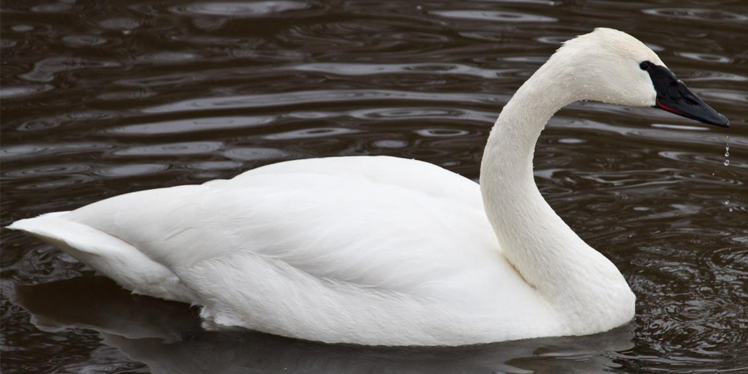

Trumpeter Swans
AKA: Male: Cob Female: Pen Scientific Name: Cygnus buccinator Family: Anatidae Species: C. buccinator Speed: 80 km/h Length: 138 – 165 cm Mass: Male: 10.9 – 12.7 kg Female: 9.4 – 10.3 kg Wing Span: 200 – 300 cm Life Span:8 – 12 years Location: Yellowstone National Park Diet: Aquatic plants. In winter, It also eats grasses and grains. The young feed on insects, fish eggs, small fish and small crustaceans.
Appearance:
It has a large, wedge-shaped bill. The bill, legs, and feet are black and the iris is brown. The adult is all white in plumage.
Facts:
- It is the largest specie of waterfowl.
- It is one of the heaviest bird which is capable of flight.
- This bird feeds while swimming.
- Newly hatched young is able to swim.